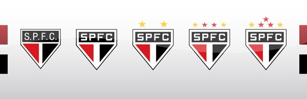
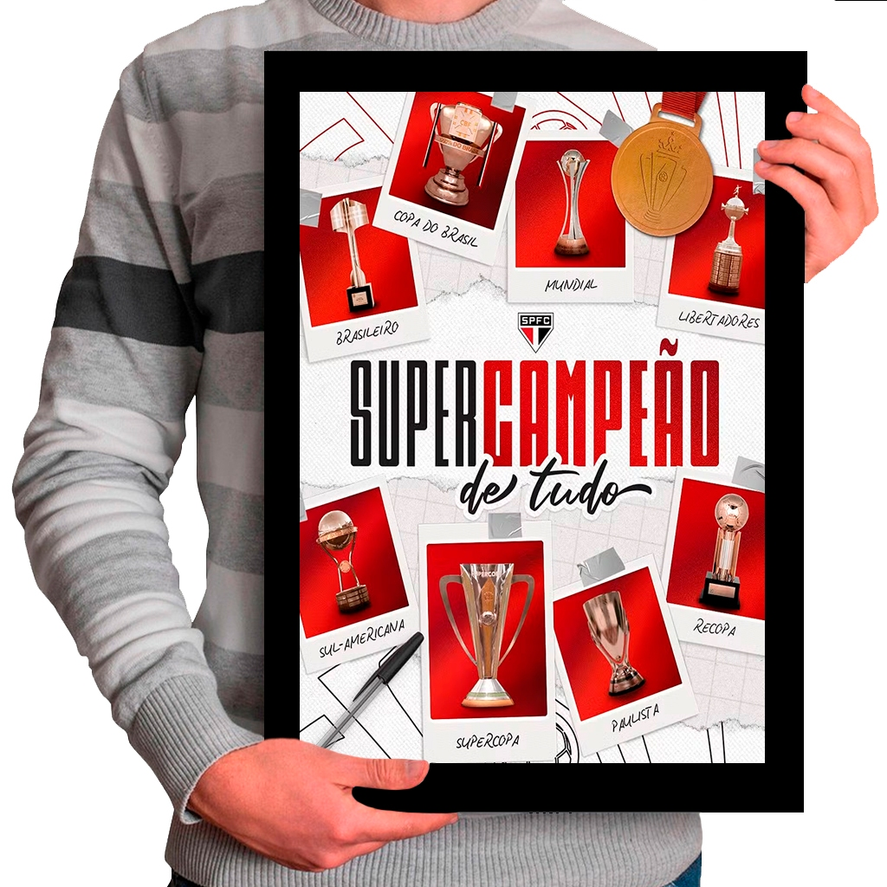
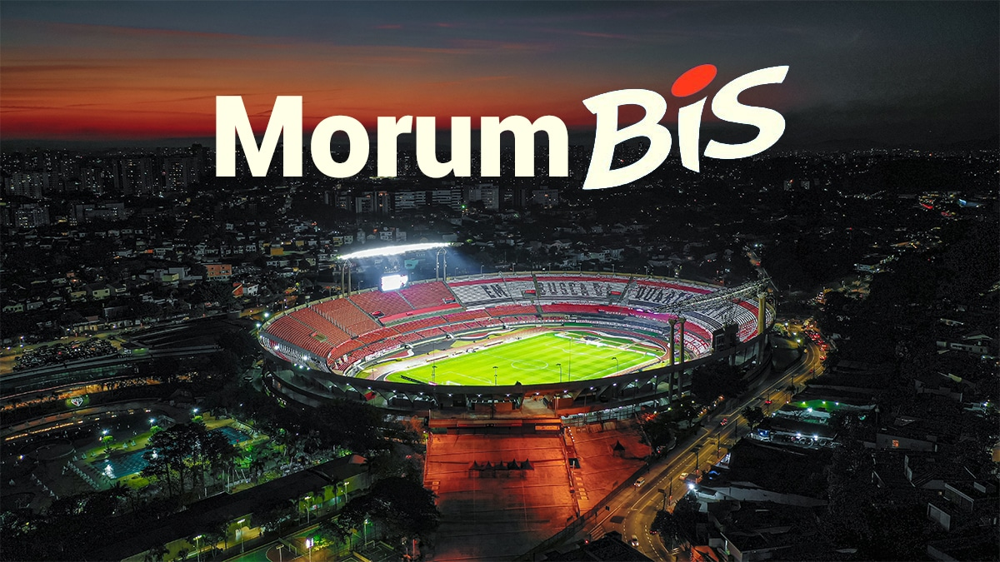

São Paulo Futebol Clube
O São Paulo Futebol Clube
(SPFC) é um clube de futebol
brasileiro com sede na cidade de São Paulo. É um dos clubes mais
vitoriosos do Brasil e do mundo, conhecido por suas conquistas nacionais
e internacionais.

Escudo oficial do São Paulo Futebol Clube - Tricampeão Mundial
História
O São Paulo Futebol Clube foi fundado em
através da
fusão do Club Athlético Paulistano com a Associação Atlética das
Palmeiras. O clube nasceu com o objetivo de ser o maior representante
do futebol paulista.
Marcos Importantes
- - Fundação do São Paulo Futebol Clube
- - Inauguração do Estádio do Morumbi
- - Primeiro título da Copa Libertadores
- - Primeiro título Mundial de Clubes
- - Terceiro título Mundial de Clubes
Principais Títulos
O São Paulo é um dos clubes mais vitoriosos do futebol mundial:
Títulos Internacionais
- Mundial de Clubes da FIFA
- 3 títulos (1992, 1993, 2005)
- Copa Libertadores da América
- 3 títulos (1992, 1993, 2005)
- Copa Sul-Americana
- 1 título (2012)
- Recopa Sul-Americana
- 2 títulos (1993, 1994)
Títulos Nacionais
- Campeonato Brasileiro
- 6 títulos (1977, 1986, 1991, 2006, 2007, 2008)
- Copa do Brasil
- 1 título (2023)
- Campeonato Paulista
- 22 títulos
- Supercopa do Brasil
- 1 título (2024)

São Paulo Super Campeão de Tudo!
Ídolos e Grandes Jogadores
O São Paulo revelou e contou com grandes jogadores ao longo de sua história:
Atacantes
Serginho Chulapa, Careca, Müller, Luís Fabiano, França
Meio-campistas
Raí, Kaká, Hernanes, Lucas Moura
Defensores
Cafu, Lugano, Miranda, Fabão
Goleiros
Gilmar, Waldir Peres, Zetti, Rogério Ceni
Estrutura do Clube
O São Paulo possui uma das melhores estruturas do futebol brasileiro:
- Estádio do Morumbi (capacidade para 66.795 espectadores)
- Centro de Treinamento de Cotia
- Categorias de base reconhecidas mundialmente
- Departamento médico de excelência
- Núcleo de performance e ciência do esporte

Estádio do Morumbis - Casa do São Paulo FC
Curiosidades
- É o único clube brasileiro tricampeão mundial
- Rogério Ceni é o goleiro que mais fez gols na história do futebol
- O estádio do Morumbis já foi o maior estádio privado do Brasil
- O clube revelou craques como Kaká
- As cores oficial são vermelho, branco e preto